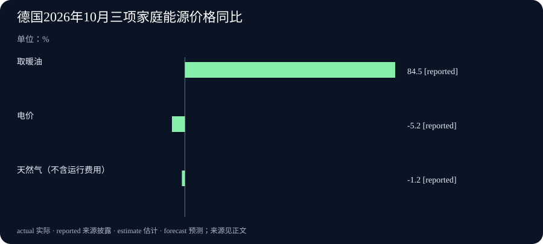

Daily Intelligence · 2026-11-12
信息边界 研究截止于北京时间 2026 年 11 月 12 日 07:00:36，优先窗口从 11 月 11 日 07:00:36 起。阿里云文档列明 11 日 10:00 开始试用，文档首次公开小时未披露。CGI 的公司原稿于美东 11 日 06:30 分发，即北京时间 19:30。百度发布目录与德国统计局原文均标注 11 日，小时未披露，原页时区未知，按来源日期采用。CGI 财报统计到 9 月 30 日，德国物价统计的是 10 月。
Today's Thesis
百度和阿里云都开放了新模型试用，但用户要面对两种后续安排。百度计划公开让团队自行运行模型所需的文件，阿里云则给当前试用入口设了下线日期。CGI 的订单、收入和现金，以及德国不同家庭能源的价格，提醒我们先分清正在比较的对象，再决定下一步怎么做。
Executive Summary
百度文心 5.5 Flash 预览版已在千帆开放软件接入。百度计划在 11 月 25 日前公开模型权重。阿里云于 11 日上午开放 Qwen4-Max 预览版，开发者接口仅向指定套餐用户开放，当前版本将于 25 日结束后下线。
加拿大信息技术服务商 CGI 财年第四季度营收约 41.5 亿加元，同比增 3.3%。季度订单仍多于当季营收，金额较上年同季减少。经营活动带来的现金也低于去年同期。
德国确认 10 月消费者物价较上年同月涨 2.8%，较 9 月降 0.2%。总数和上月底的初值一致。终值报告列出此前未公布的家庭能源细项，其中取暖油涨幅扩大，电价和天然气价格均低于去年同月。
AI Daily
百度开放文心 5.5 Flash 预览版的接口
百度 11 月 11 日发布文心 5.5 Flash 预览版。这是此前基础模型的首个后训练版本。后训练是在基础训练完成后再做训练，让模型更适合执行特定任务。开发者现在可以通过百度千帆的应用程序接口（API）接入。接口是软件向模型发送任务并收取结果的方式。百度还计划于 11 月 25 日前公开模型权重，也就是记录训练结果、供团队运行模型的参数文件。自行运行的条件仍要看随文件发布的许可和说明。 百度预览版公告
百度称该模型最多支持约 100 万个内容单元的上下文。上下文是模型在一次任务中可参考的材料范围，内容单元由系统切分，和中文字数并不一一对应。百度在公告里展示了模型用脚本在设计软件 FreeCAD 中制作概念月球车的过程，成果包括可以修改的装配模型。这个演示给测试者提供了一项具体标准：生成的文件能不能交给别人继续修改。它是百度选出的实例。常见文件、不同工作要求和反复运行的结果仍需分别测试。 百度公告中的设计演示
阿里云的 Qwen4-Max 预览有明确的结束时间
阿里云百炼公布的开放时间为北京时间 11 月 11 日 10:00。软件接入当前预览版须使用 Token Plan，这是阿里云提供的用量套餐。文档写明当前版本不提供按实际用量付费的入口，在预览期间保持不变，11 月 25 日 24:00 结束后下线。需要长期运行的团队应在试用期间核对后续接入方式和费用。 阿里云百炼预览文档
这个预览版能读文字、图片和视频，用文字返回结果，也可以按软件规定的格式填好字段。举例来说，团队可以让它阅读一张表单截图，再把找到的日期填进指定字段，并检查原图是否支持该日期。阿里云同时提醒，在指定接入方式下，模型用来推理的内容和最终回答共用一个长度上限。旧程序若按以往的回答长度设定上限，试用时应检查长回答有没有被截断。 阿里云百炼规格及使用说明
Business Daily
CGI 季度营收增长，订单额和经营现金流低于去年同季
CGI 在 11 月 11 日公布了截至 9 月 30 日的 2026 财年第四季度和全年业绩。这家加拿大企业为客户提供信息技术和商业咨询服务。第四季度营收约 41.5 亿加元，同比增长 3.3%。用固定汇率换算以减少汇率变化影响，增幅为 2.5%。净利润约 4.61 亿加元，同比增长 20.8%。公司按自己的方法扣除重组、收购及整合相关成本后，调整后净利润同比增 0.8%。上年同期扣除的这类成本明显更高，阅读两种利润增幅时要同时看这一差别。 CGI 财报原文
财报列出的季度订单额约为 45.3 亿加元，高于当季营收，约是营收的 109.2%。上年同季订单约 47.9 亿加元。两个比较各回答一个问题。前者说明本季订单额相对本季业务规模有多大，后者说明公司拿到的订单金额较去年同季有所减少。公司经营活动产生的现金为 5.519 亿加元，上年同季为 6.630 亿加元。合同产生的收入随履约确认，现金还受实际收付款时间等因素影响。 CGI 署名分发稿及同比表
公司把人工智能纳入部分代客户运行和维护的服务，并单列了这类服务的订单额与营收之比，为 122%。这个数字采用的业务范围比全公司 109.2% 窄。公告没有给出人工智能功能单独带来多少营收，后续应看公司是否公开续约和实际交付数据。 CGI 公司公告
Macro Observation
德国确认 10 月通胀初值，并列出家庭能源分项
德国联邦统计局 11 月 11 日确认，10 月消费者物价指数同比上涨 2.8%，环比下降 0.2%，与 10 月 30 日公布的初值一致。消费者物价指数衡量家庭常买的一组商品和服务的价格变化。10 月整体价格高于去年同月，低于今年 9 月。剔除食品和能源的核心通胀为 2.1%，低于 7 月至 9 月每月的 2.4%。 德国物价终值 10 月 30 日初值
终值新增细项说明。能源价格整体同比上涨 12.2%，较 9 月的 14.9% 放缓。车用燃料同比涨幅由 37.1% 降至 28.9%，而取暖油涨幅从 74.9% 升至 84.5%。电价同比下降 5.2%，不含运行费用的天然气价格同比下降 1.2%。统计局判断 10 月开始的车用燃料优惠可能压低了部分涨幅，公告未给出政策单独影响了多少。依赖取暖油和使用天然气的家庭，面对的价格变化方向可以不同。 德国统计局能源细项
Signal Dashboard
| 信号 | 现在可以确认 | 接下来核对什么 |
|---|---|---|
| 百度文心 | 千帆已开放预览接口 | 计划公开的权重、许可和运行要求 |
| 阿里云千问 | 11 日开放套餐试用，25 日结束 | 预览结束后可接入的版本、条件与费用 |
| CGI | 季度收入增加，订单额较去年同季减少 | 哪些订单转为交付，实际收款怎样变化 |
| 德国物价 | 10 月同比涨 2.8%，公布取暖油等细项 | 下一期能源分项与核心通胀是否延续 |
Deep Insight
模型试用之后，企业怎样判断能否长期采用
两家厂商都给出了接入入口，下一步所需的证据各有侧重。百度已经让开发者通过千帆提交任务，团队可以先查结果是否有用。若打算在自己的设备上运行，还要等公开权重和配套说明，然后核对文件许可、机器要求和可接入的工具。阿里云给出了试用起止日期，并说明当前版本在期间保持不变。这为同一批材料的反复测试提供了相对稳定的环境。若要把结果用到 25 日以后，则需等后续版本的使用条件，并用同样的材料重新测一遍。
两家产品都面向能拆成多步的工作。任务越长，一次只看最后结果越容易漏掉中间的问题。假设企业要从合同图片中提取付款日，可以事先准备几份日期清楚的合同，再加入同一页上有多个日期、图片有缺角的例子。验收时检查模型是否找到正确条款、是否能指出页码、遇到看不清的字段会不会留给人处理。若更换版本后格式变了，系统还要能继续读入结果。记录这些问题和人工复核所用的时间，可以估算实际接手工作的成本。
CGI 的财报提供了企业购买此类服务之后还要走过的几个环节。客户下单之后，供应商要完成项目或按约提供长期服务，才能逐步把工作记成营收。付款又取决于合同和交付安排。订单大于当期营收可以帮助判断手上业务的规模，订单同比下降则提醒读者保留去年同一季度这个基准。两条信息可以同时成立。对于嵌入人工智能的服务，公开数据目前只让读者看到特定业务的订单与收入之比。要判断客户是否愿意长期付费，需要进一步看到续约与交付的情况。 CGI 财报与分项说明
德国报告用另一种方式说明了为什么要保留细项。家庭不会按全国平均比例购买每种能源。假设两户人家的其他开销接近，一户用油取暖，另一户用天然气，10 月平均物价指数所显示的幅度就可能离他们各自的账单很远。统计局的报告还区分了相对上月的价格变化和相对去年同月的价格变化。预算若按年调整，就该看同比。要检查 10 月新政策后的短期变化，还要看环比，政策效果则需要能区分其他同时变化因素的证据。 德国统计局物价报告
可以把四条新闻中的数字放回各自的决策场景。采购模型的人需要知道试用何时到期、下一版是否能复现已验收的结果。看企业财报的人需要跟进服务交付和付款。根据物价安排家庭预算的人需要找到账单里权重最大的项目。先选与决定有关的比较，再看新闻里的大数字有没有回答那个问题。
Tomorrow Watch
- 百度若公布权重下载地址和许可，留意团队能否在自己的设备上运行，以及软件接口和自行运行版本是否有相同的工具能力。
- 阿里云若发布后续接入说明，留意当前模型编号的替代方式，并确认过渡期、套餐和输出长度的规则。
- CGI 若进一步披露订单结构，留意续签和新项目各占多少，哪个季度开始交付。
- 下次德国公布物价时，可对照取暖油、车用燃料和核心通胀，观察本月几个方向不同的变化是否持续。
One Chart
德国 2026 年 10 月三项家庭能源价格同比。单位为百分比，均与 2025 年 10 月比较。图中 reported 表示德国联邦统计局披露的终值。取暖油上涨 84.5%，电价下降 5.2%，天然气价格下降 1.2%，天然气口径不含运行费用。三根柱各表示一种价格的变动幅度。各项在家庭支出中的比重另行计算。 德国联邦统计局终值与能源细项

Quote of the Day
The problem of the Twentieth Century is the problem of the color-line.
二十世纪的问题，是肤色划出的界线问题。
W. E. B. Du Bois（杜波依斯），《黑人的灵魂》（The Souls of Black Folk，1903 年），第二章结尾。杜波依斯在这一章讨论美国内战后被解放者争取自由的处境，并把按肤色划分人的问题放到更广的世界中考察。 耶鲁法学院阿瓦隆项目收录原文
编辑解读 这里的“界线”可以从生活中的机会来理解。看一项新制度带来了什么变化，也要看哪些人能实际进入学校、使用公共服务或享有法律保障。
Action Items
- 试用结束后怎么接着用？ 把预览编号、结束日和替换方式记在一起，并准备一批可以重跑的验收样本。
- 哪一个结果能说明模型帮上了忙？ 用一份常见材料和一份容易出错的材料各跑一次，记录答案、依据和人工复核用时。
- 新订单何时会进入收入？ 看财报时分别记下本季订单、上年同期订单和本季营收，再追踪项目交付的时间。
- 哪类能源价格更贴近自己的支出？ 先对照取暖和用车方式，再查看对应分项的同比与环比。
- 统计终值多告诉了我们什么？ 并排读德国 10 月 30 日初值和 11 月 11 日终值，找出这次新增的家庭能源细项。